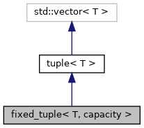
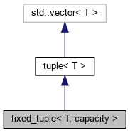

fixed_tuple< T, capacity > Class Template Reference
A fixed tuple is a vector with a templated type and a reserved capacity. More...
#include <cs_Tuple.h>
Inheritance diagram for fixed_tuple< T, capacity >:

Collaboration diagram for fixed_tuple< T, capacity >:

Public Member Functions | |
| fixed_tuple () | |
| Constructor reserves capacity in vector. | |
 Public Member Functions inherited from tuple< T > Public Member Functions inherited from tuple< T > | |
| tuple () | |
| Default constructor. | |
Detailed Description
template<typename T, uint8_t capacity>
class fixed_tuple< T, capacity >
A fixed tuple is a vector with a templated type and a reserved capacity.
Wrapper for a std::vector with a default constructor with a particular capacity.
- Parameters
-
T Templated type of elements in the vector. capacity Predefined capacity of the underlying std::vector.
The documentation for this class was generated from the following file:
- source/include/common/cs_Tuple.h